| Date | 8 novembre 2026 |
| Dépôt | senevent |
| Branche du lab | feature/lab12-eas |
| Tag de sortie | v2.0 |
| Application | apps/mobile (Expo / React Native) |
| APK Android | expo.dev — build c2892286 (profil preview) |
Ce dernier lab transforme l'application mobile en vraie application Android installable. Jusqu'ici, SenEvent mobile tournait dans Expo Go : un QR code, un serveur de développement sur l'ordinateur, et l'application disparaissait dès que l'ordinateur s'éteignait. Le lab produit un APK construit sur les serveurs d'EAS Build, installable sur un téléphone, qui fonctionne sans ordinateur et sans Expo Go.
Le travail couvre huit étapes :
expo-doctor) et créer la branche feature/lab12-eas.babyamina, projet @babyamina/senevent.app.json : nom, version, android.package.eas.json, avec un profil preview qui produit un APK.EXPO_PUBLIC_* dans l'environnement preview.v2.0.Le résultat est une application Android signée, téléchargeable, qui partage la même base
Supabase et le même package @senevent/shared que le site Vercel.
| Indicateur | Valeur |
|---|---|
| Projet Expo | @babyamina/senevent |
| Identifiant EAS | d5de33b6-e341-4e8d-a099-a55f63d284f1 |
| Identifiant Android | sn.ucad.senevent.equipe1 |
| Version mobile | 1.0.0 (versionCode 1) |
| Profil de build | preview — APK, distribution interne |
| Build EAS | FINISHED — 10 min 9 s |
| APK | 64,99 Mo — SHA-256 eef7f0e2…ba2a |
| Site web | https://senevent-equipe-1.vercel.app |
| Tag final | v2.0 |
Depuis le Lab 8, le mobile se lance avec npx expo start et s'ouvre dans Expo Go. C'est un
excellent outil de développement : le code se recharge à chaque sauvegarde. Mais Expo Go est
une application hôte : elle ne contient pas votre application, elle exécute le JavaScript
envoyé par le serveur de développement.
| Expo Go | APK | |
|---|---|---|
| Contenu | Le moteur Expo, pas votre code | Moteur React Native + modules natifs + votre JavaScript |
| Démarrage | QR code + serveur sur l'ordinateur | Icône sur le téléphone, aucun ordinateur |
| Partage | Impossible hors de l'équipe | Fichier installable, envoyé par WhatsApp |
| Identité | Celle d'Expo Go | Nom, icône et identifiant propres |
Produire un APK demande normalement Android Studio, le SDK Android, Java et Gradle. EAS Build fait cette compilation sur les serveurs d'Expo : la machine envoie le dépôt, EAS installe les dépendances du monorepo, injecte les variables de l'environnement choisi, assemble le JavaScript avec Metro, compile avec Gradle, puis renvoie un APK signé.
machine serveurs EAS Build résultat
eas build --profile preview → npm install (monorepo) → APK signé
envoie les fichiers Git variables EXPO_PUBLIC_* lien + QR code
.env reste local Metro + Gradle installable
La commande est lancée depuis apps/mobile, mais EAS envoie tout le dépôt, de la racine.
C'est ce qui permet d'installer les workspaces npm et de lier @senevent/shared. Le fichier
package-lock.json unique à la racine, vérifié au Lab 11, est donc aussi indispensable ici.
La branche part de main, qui contient le Lab 11 terminé : site Vercel en production et tag
v1.0-web.
git checkout main
git pull origin main
git log --oneline -6
git checkout -b feature/lab12-eas
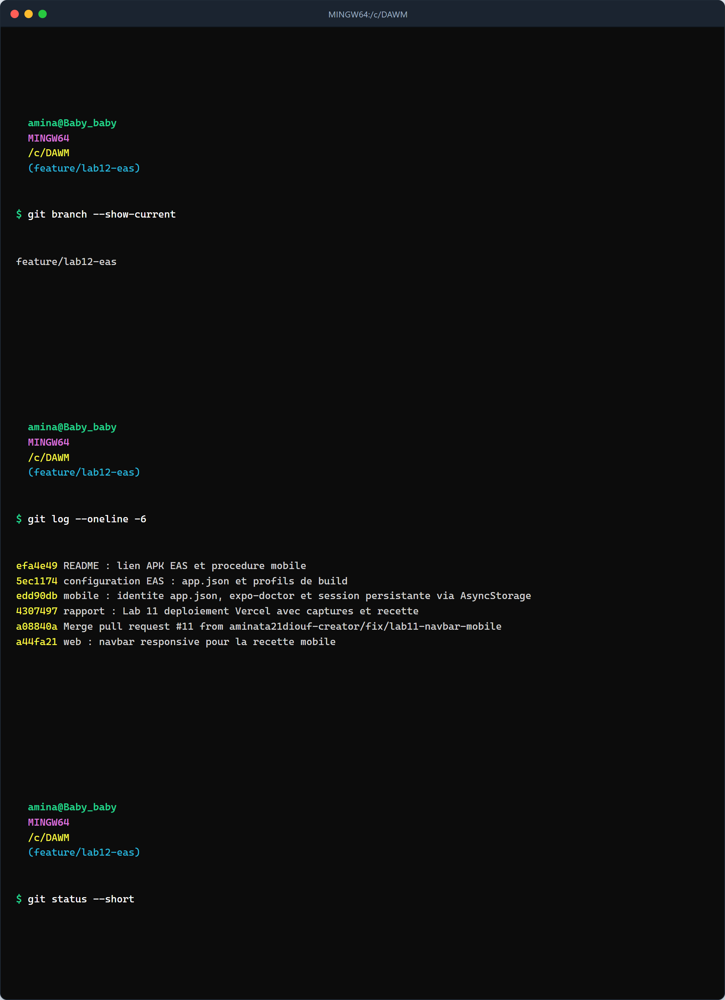
La branche part du commit 4307497 (rapport du Lab 11). Le code mobile est celui du Lab 10 :
catalogue, détail, connexion, création et inscription.
L'application mobile avait été validée dans Expo Go au Lab 10 : les écrans du catalogue, du détail, de la connexion et de la création répondaient. Aucun blocage fonctionnel n'était connu au départ de ce lab. Un bug présent à ce stade serait compilé dans l'APK, et chaque nouveau build consomme du quota : la vérification de configuration (section 4.2) précède donc le build.
Le compte Expo est babyamina. Il est propriétaire du projet et des builds. La connexion
a été faite par la propriétaire du compte avec eas login ; aucun mot de passe ni jeton n'est
stocké dans le dépôt.
npx eas-cli whoami
# babyamina
Le compte expose deux espaces : babyamina (personnel) et babyaminas-team (organisation).
Le projet est créé dans l'espace personnel, ce qui évite de dépendre d'une organisation pour
un lab individuel.
EAS CLI est utilisé via npx eas-cli, sans installation globale. La version est figée par
eas.json ("cli": { "version": ">= 27.5.0" }), donc tous les builds utilisent une CLI
compatible.
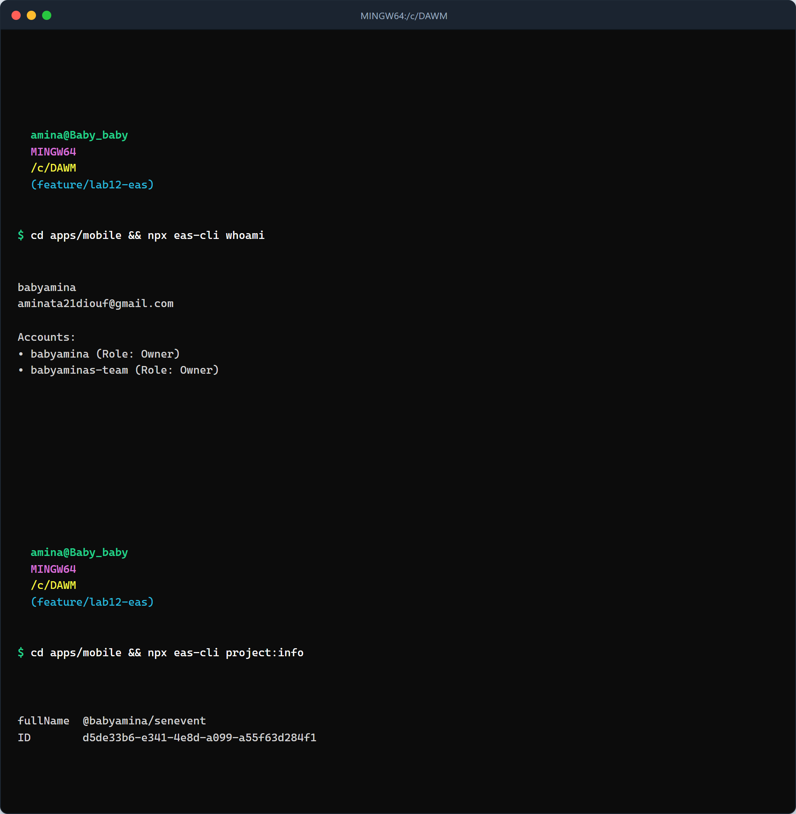
eas whoami confirme l'identité, eas project:info confirme le projet lié et son identifiant.
app.jsonJusqu'ici, app.json ne servait qu'à Expo Go. Une application installable a besoin d'une
identité propre.
{
"expo": {
"name": "SenEvent",
"slug": "senevent",
"scheme": "senevent",
"version": "1.0.0",
"orientation": "portrait",
"icon": "./assets/icon.png",
"android": {
"package": "sn.ucad.senevent.equipe1",
"adaptiveIcon": {
"foregroundImage": "./assets/adaptive-icon.png",
"backgroundColor": "#1a3a5c"
}
}
}
}
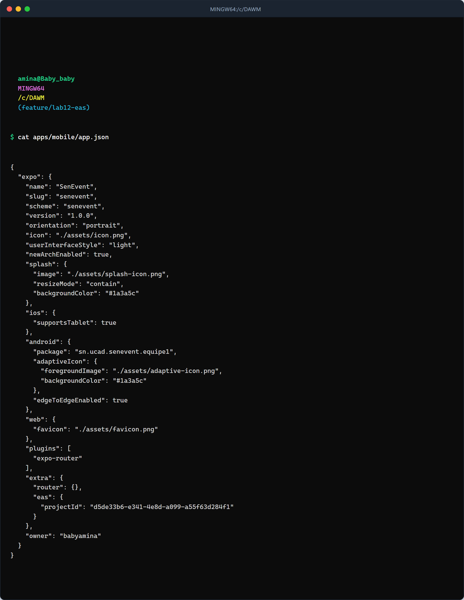
| Champ | Rôle | Valeur choisie |
|---|---|---|
name |
Nom affiché sous l'icône | SenEvent |
version |
Version visible par l'utilisateur | 1.0.0 |
android.package |
Identifiant unique sur Android, en nom de domaine inversé | sn.ucad.senevent.equipe1 |
Le package est définitif : deux applications qui partagent le même identifiant se
remplacent sur le téléphone. Il porte l'université (sn.ucad), le projet (senevent) et le
numéro d'équipe (equipe1).
Le scheme senevent permet les liens profonds, et la couleur adaptative reprend le bleu de
la charte (#1a3a5c).
expo-doctor vérifie la cohérence des versions et de la configuration. Au premier passage,
16 contrôles sur 18 seulement passaient :
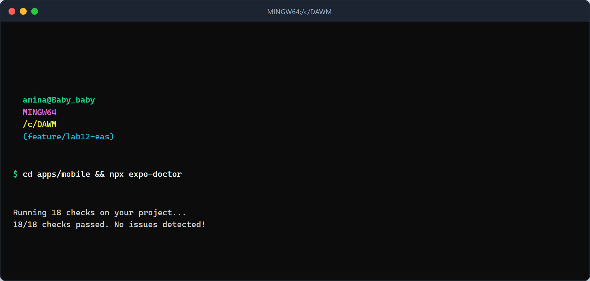
Deux problèmes réels ont été corrigés avant de consommer un build :
watchFolders écrasait les dossiers surveillés par défaut d'Expo. La correction
ajoute la racine du monorepo sans supprimer les valeurs par défaut :js
config.watchFolders = Array.from(
new Set([...(config.watchFolders || []), monorepoRoot])
);
expo et expo-constants avaient une version de patch en retard. Ils ont
été alignés sur le SDK 54 avec npx expo install expo@~54.0.37 expo-constants@~18.0.14.Après correction, expo-doctor affiche 18/18, aucun problème. Un build EAS échoué après
vingt minutes de file d'attente coûte cher : ce diagnostic est un investissement, pas une
formalité.
eas.jsoneas initDepuis apps/mobile, eas init crée le projet sur expo.dev et ajoute dans app.json
l'identifiant de projet et le propriétaire :
"extra": {
"eas": { "projectId": "d5de33b6-e341-4e8d-a099-a55f63d284f1" }
},
"owner": "babyamina"
Ces deux champs sont versionnés : toute l'équipe pointe vers le même projet EAS.
eas build:configure --platform android génère eas.json. Seul le profil preview a été
modifié pour produire un APK :
{
"cli": {
"version": ">= 27.5.0",
"appVersionSource": "remote"
},
"build": {
"development": {
"developmentClient": true,
"distribution": "internal"
},
"preview": {
"distribution": "internal",
"environment": "preview",
"android": { "buildType": "apk" }
},
"production": {
"environment": "production",
"autoIncrement": true
}
}
}
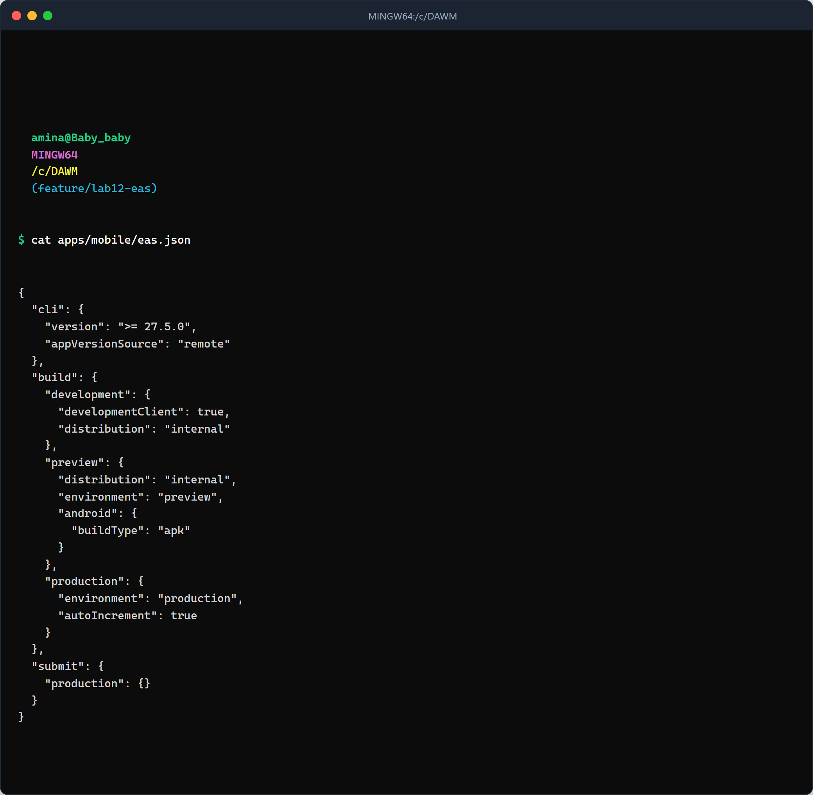
| Profil | Sortie | Usage |
|---|---|---|
development |
Client de développement | Non utilisé dans ce cours |
preview |
APK (buildType: apk), distribution interne |
Livrable du lab |
production |
AAB, incrément automatique | Google Play, non installable directement |
La ligne "buildType": "apk" est essentielle : sans elle, EAS produit un AAB, le format du
Play Store, qu'on ne peut pas installer sur un téléphone.
Les clés Supabase du mobile sont dans apps/mobile/.env, ignoré par Git. Or EAS n'envoie que
les fichiers suivis par Git. Sur les serveurs EAS, process.env.EXPO_PUBLIC_SUPABASE_URL
vaut undefined : l'APK s'installe, s'ouvre, puis s'arrête sur supabaseUrl is required.
C'est exactement le problème du Lab 11 avec Vercel, et la solution est la même : déclarer les variables chez le service qui construit.
previeweas env:set --name EXPO_PUBLIC_SUPABASE_URL \
--value https://oymhcmowujakgyqpkpjc.supabase.co \
--environment preview --visibility plaintext
eas env:set --name EXPO_PUBLIC_SUPABASE_ANON_KEY \
--value sb_publishable_... \
--environment preview --visibility plaintext
eas env:list --environment preview
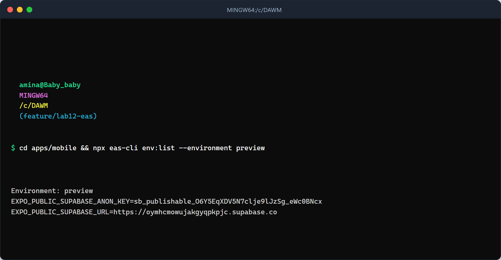
Le profil preview de eas.json déclare "environment": "preview" : chaque build de ce profil
reçoit ces deux variables. Aucun fichier du dépôt n'est modifié ; les valeurs vivent sur
expo.dev.
La clé utilisée est une clé publishable (sb_publishable_...). Comme VITE_ au Lab 11,
une variable EXPO_PUBLIC_ est écrite en clair dans le JavaScript : n'importe qui peut
extraire un APK et la lire. C'est sans danger pour cette clé, protégée par les politiques RLS.
La clé service_role, qui contourne RLS, n'apparaît jamais dans une application mobile.
Dans Expo Go, on se reconnectait sans y penser. Dans une vraie application, devoir saisir son mot de passe à chaque ouverture est inacceptable.
Sur le web, le client Supabase range la session dans le localStorage : elle survit au
rechargement. React Native n'a pas de localStorage. Sans indication, le client garde la
session en mémoire, et elle disparaît avec l'application. L'équivalent mobile est
AsyncStorage, un stockage clé-valeur persistant propre à l'application.
initSupabase reçoit un troisième paramètre optionnel. Le web, qui appelle toujours avec deux
arguments, garde exactement son comportement d'avant.
export function initSupabase(
url: string,
anonKey: string,
options?: SupabaseClientOptions<"public">
): SupabaseClient<Database> {
if (!client) {
client = createClient<Database>(url, anonKey, options);
}
return client;
}
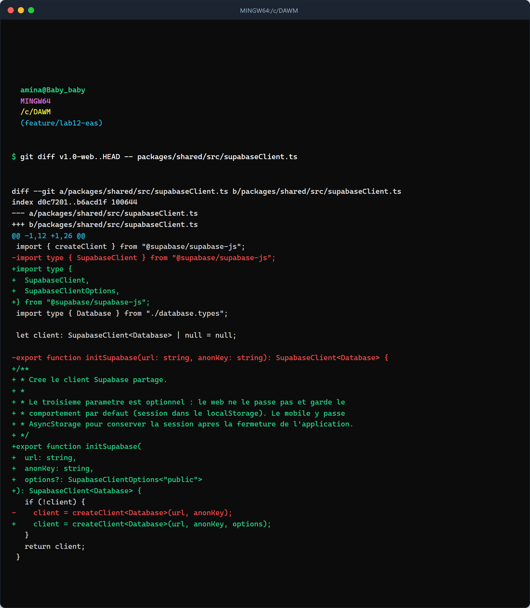
C'est le principe du Lab 7 : le package ne sait pas sur quelle plateforme il tourne, c'est chaque application qui lui fournit ce dont elle a besoin.
npx expo install @react-native-async-storage/async-storage
initSupabase(
process.env.EXPO_PUBLIC_SUPABASE_URL,
process.env.EXPO_PUBLIC_SUPABASE_ANON_KEY,
{
auth: {
storage: AsyncStorage,
persistSession: true,
autoRefreshToken: true,
detectSessionInUrl: false,
},
}
);
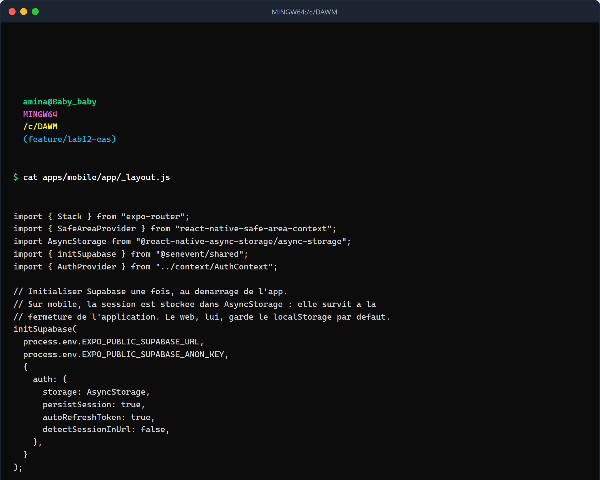
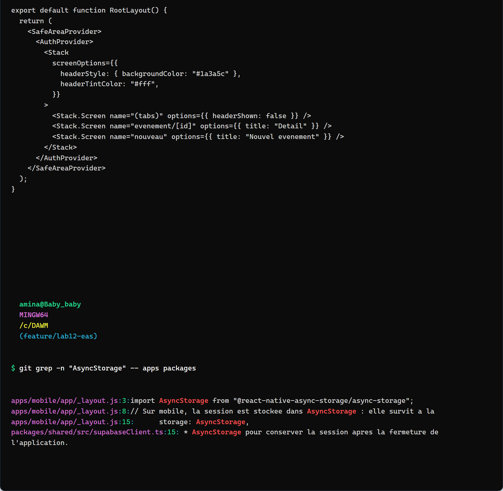
| Réglage | Rôle |
|---|---|
storage |
Où ranger la session : AsyncStorage |
persistSession |
La relire au démarrage |
autoRefreshToken |
Renouveler le jeton avant expiration |
detectSessionInUrl |
Désactivé : une application mobile ne reçoit pas la session dans une URL |
Le AuthProvider du Lab 10 n'a pas changé : au démarrage, getSession() lit maintenant la
session dans AsyncStorage.
Le changement touche packages/shared, donc les deux clients. Deux vérifications ont été
faites :
tsc -b && vite build passe (91 modules, 443 kB de JavaScript).localStorage
(clé sb-oymhcmowujakgyqpkpjc-auth-token).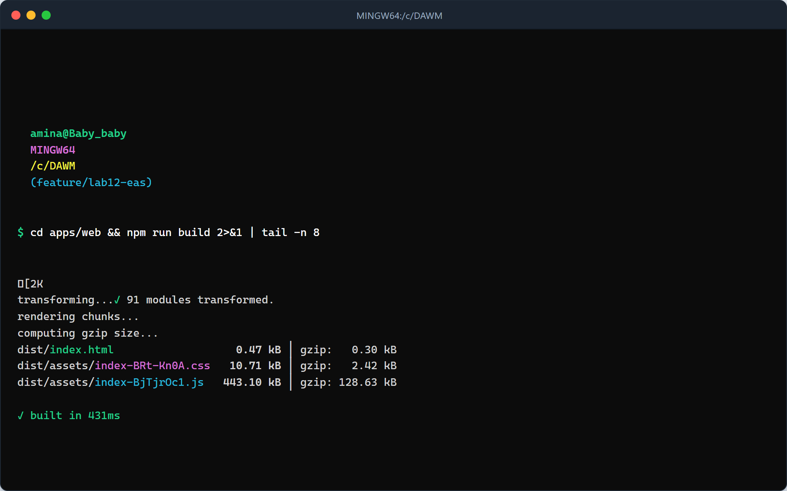
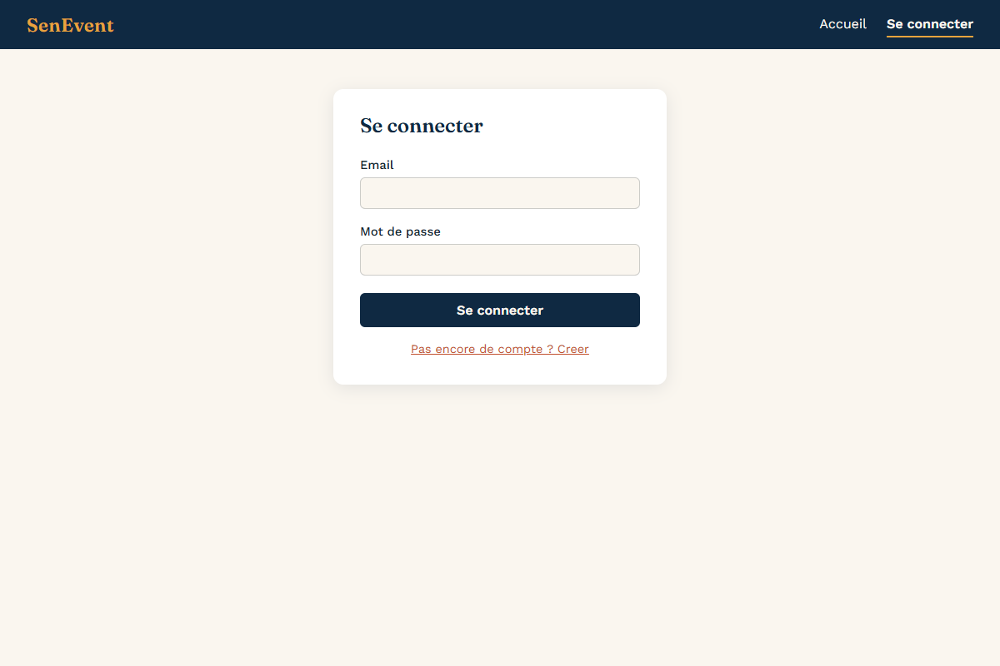
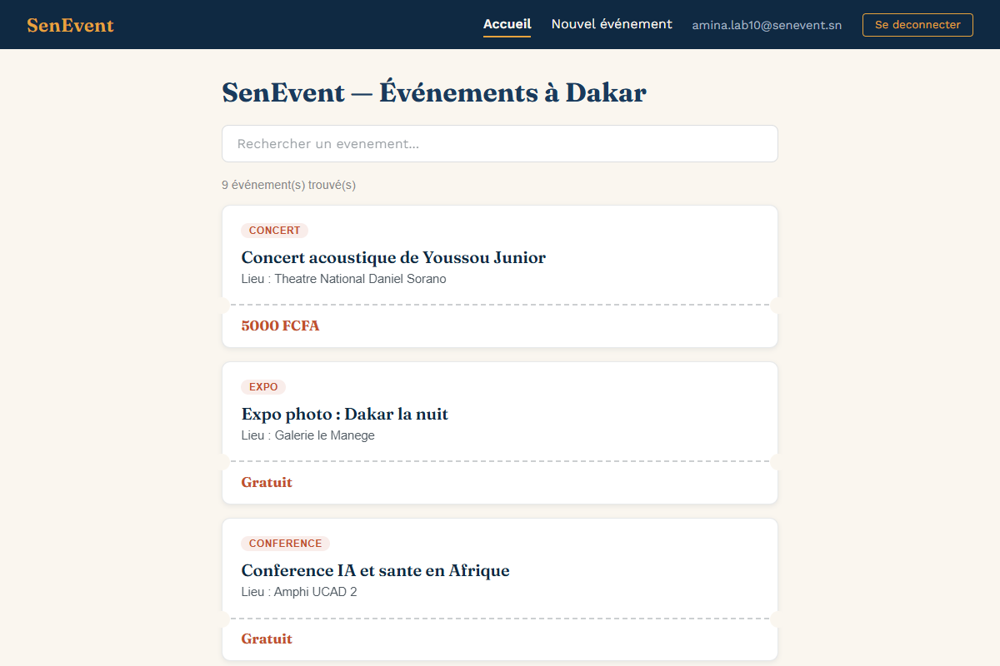
Le web n'a donc pas changé de comportement : il utilise toujours le localStorage, tandis que
le mobile utilise AsyncStorage.
Le build part du contenu de la branche, dont le code est identique à celui qui sera mergé :
git checkout main
git pull origin main
cd apps/mobile
eas build --platform android --profile preview
À la première exécution, EAS crée le keystore Android, la clé qui signe l'application, et
le conserve pour les builds suivants. La version initiale du versionCode est fixée à 1.
Le journal du build montre les étapes réelles, avec leur durée mesurée :
| Phase EAS | Durée | Contenu |
|---|---|---|
INSTALL_DEPENDENCIES |
47,7 s | npm ci --include=dev sur le monorepo |
RUN_EXPO_DOCTOR |
4,2 s | diagnostic de configuration |
PREBUILD |
9,3 s | génération du projet Android natif |
EAGER_BUNDLE |
16,8 s | Metro : 1 096 modules, bundle en 11,1 s |
RUN_GRADLEW |
514,3 s | gradlew :app:assembleRelease, 335 tâches |
UPLOAD_APPLICATION_ARCHIVE |
3,0 s | envoi de l'APK de 65,0 Mo |
preview et des deux variables EXPO_PUBLIC_* ;versionCode à 1 (versions distantes) ;BUILD SUCCESSFUL in 8m 33s, puis publication de l'APK et de son QR code.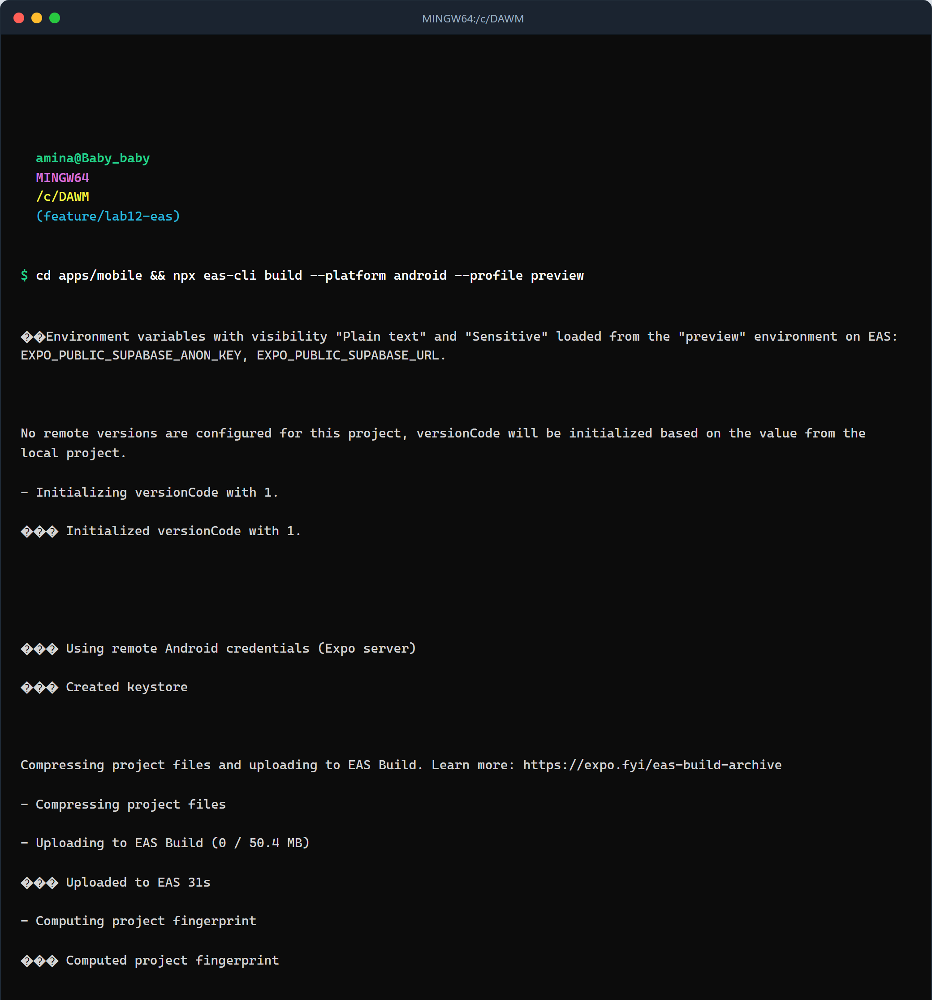
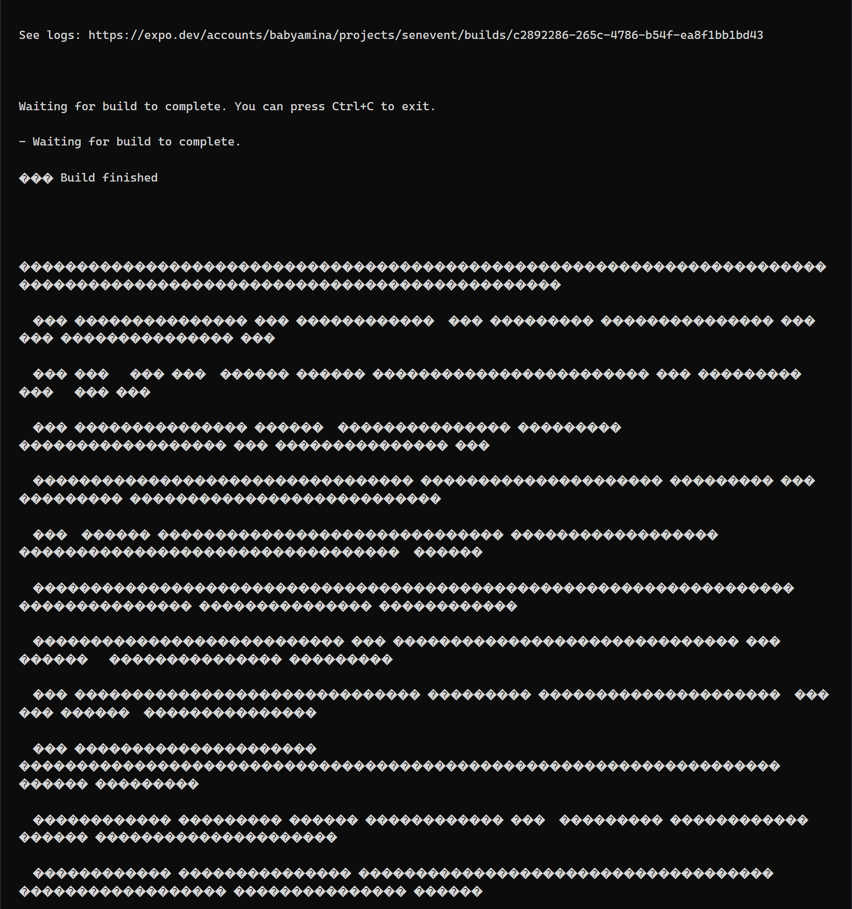
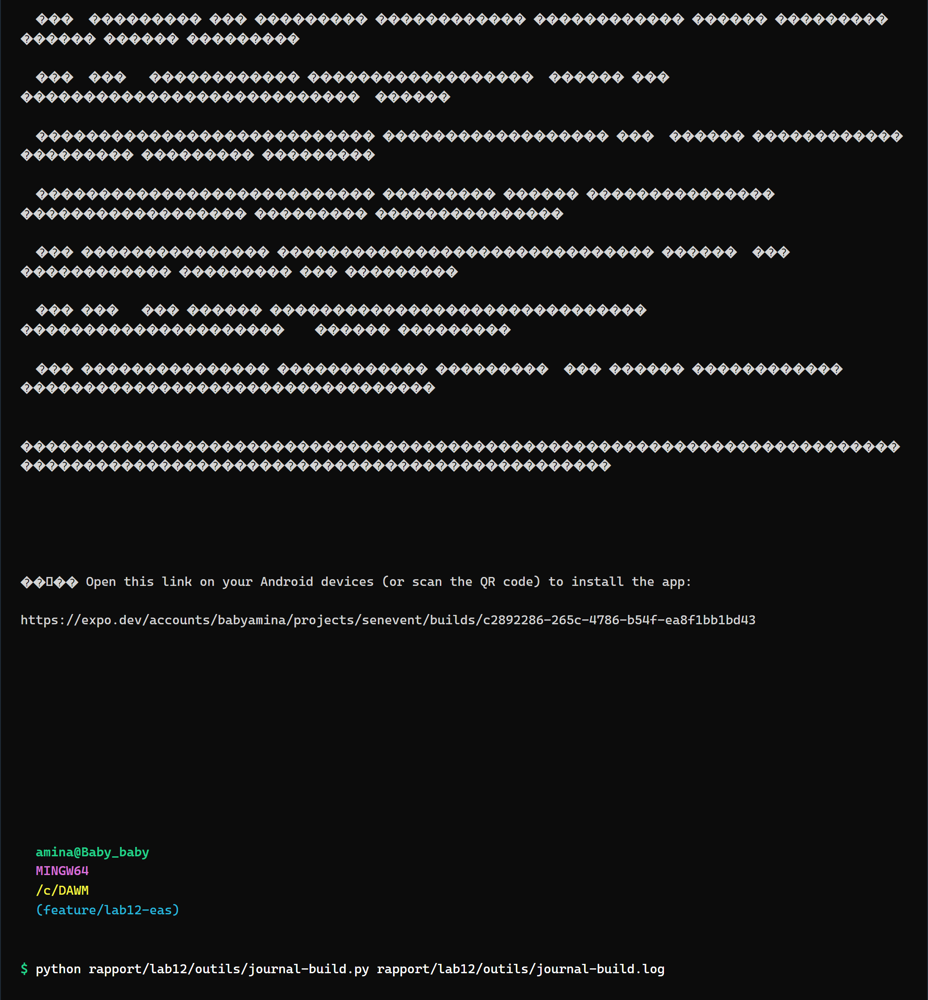
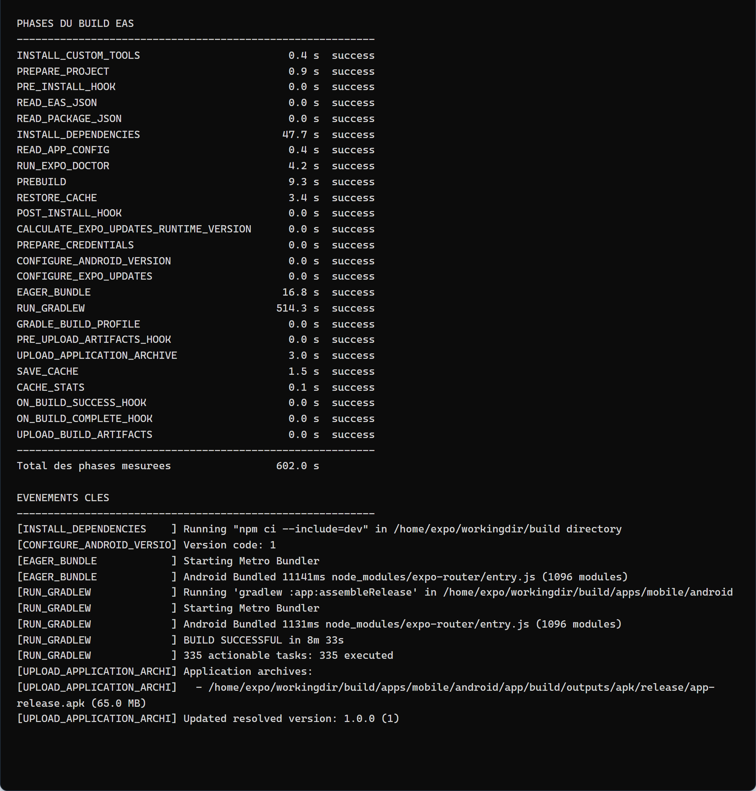
Le build est visible sur expo.dev :
https://expo.dev/accounts/babyamina/projects/senevent/builds/c2892286-265c-4786-b54f-ea8f1bb1bd43
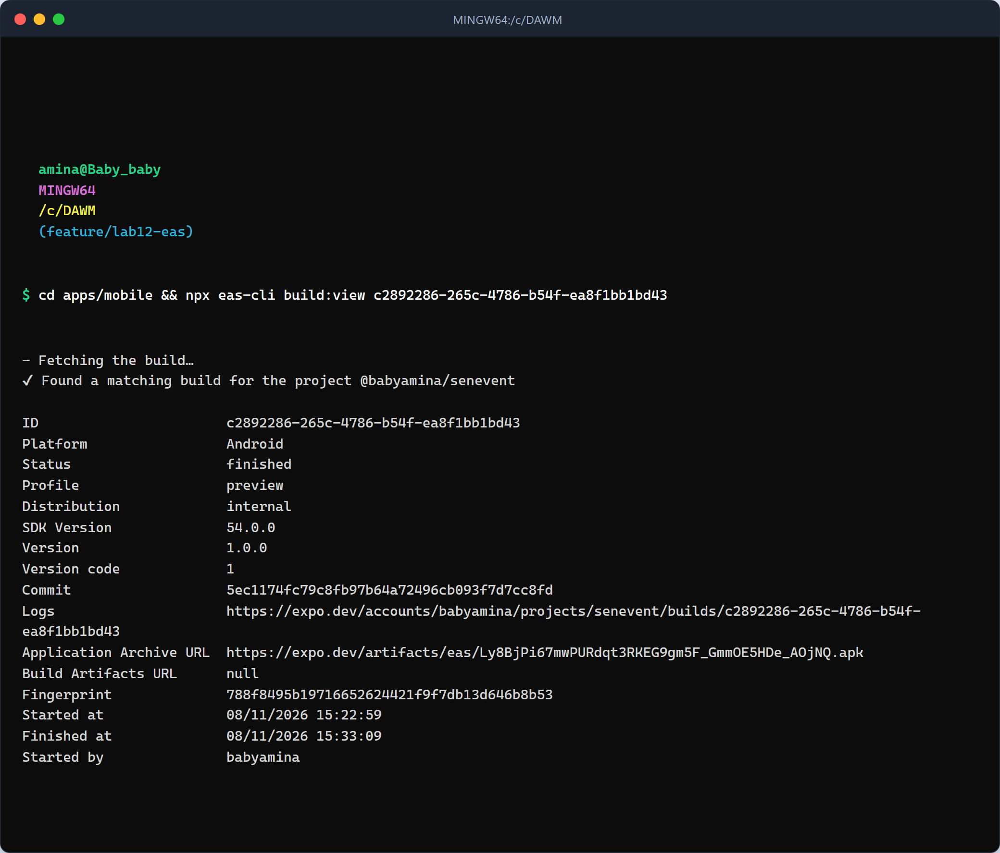
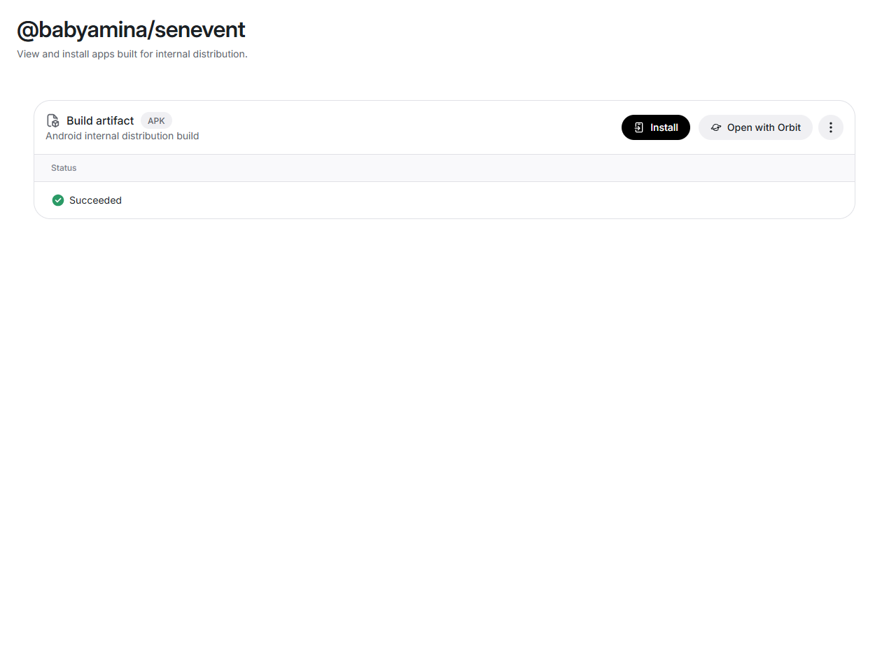
| Propriété | Valeur |
|---|---|
| Statut | FINISHED (succès) |
| Plateforme | Android |
| Profil | preview (distribution interne) |
| SDK Expo | 54.0.0 |
| Version | 1.0.0, versionCode 1 |
| Commit construit | 5ec1174 |
| Durée | 10 min 9 s (15:22:59 → 15:33:08) |
| APK | 64,99 Mo (68 151 935 octets) |
| SHA-256 | eef7f0e29e3591849ff546dfa471a66ebdcb45e94e44bf139dfdf1ca5db0ba2a |
L'APK est téléchargeable depuis la page du build. Il est signé par le keystore créé par EAS (bloc de signature v2/v3 présent), donc installable sur n'importe quel téléphone Android.
La recette du lab se fait sur un téléphone Android, ordinateurs éteints, Wi-Fi coupé, en 4G. L'environnement de travail ne dispose que d'un iPhone : un APK Android ne peut pas s'y installer, et une application iOS hors App Store exige un compte Apple Developer payant, hors périmètre du cours.
La recette sur téléphone n'a donc pas été exécutée. Elle est documentée comme non testée, et non comme validée. Ce qui peut l'être sans téléphone a été vérifié : le contenu de l'APK.
L'APK a été téléchargé et analysé :
package sn.ucad.senevent.equipe1
versionName 1.0.0
versionCode 1
taille 64,99 Mo (68 151 935 octets)
SHA-256 eef7f0e29e3591849ff546dfa471a66ebdcb45e94e44bf139dfdf1ca5db0ba2a
signature bloc APK Sig Block v2/v3 present
libelle SenEvent
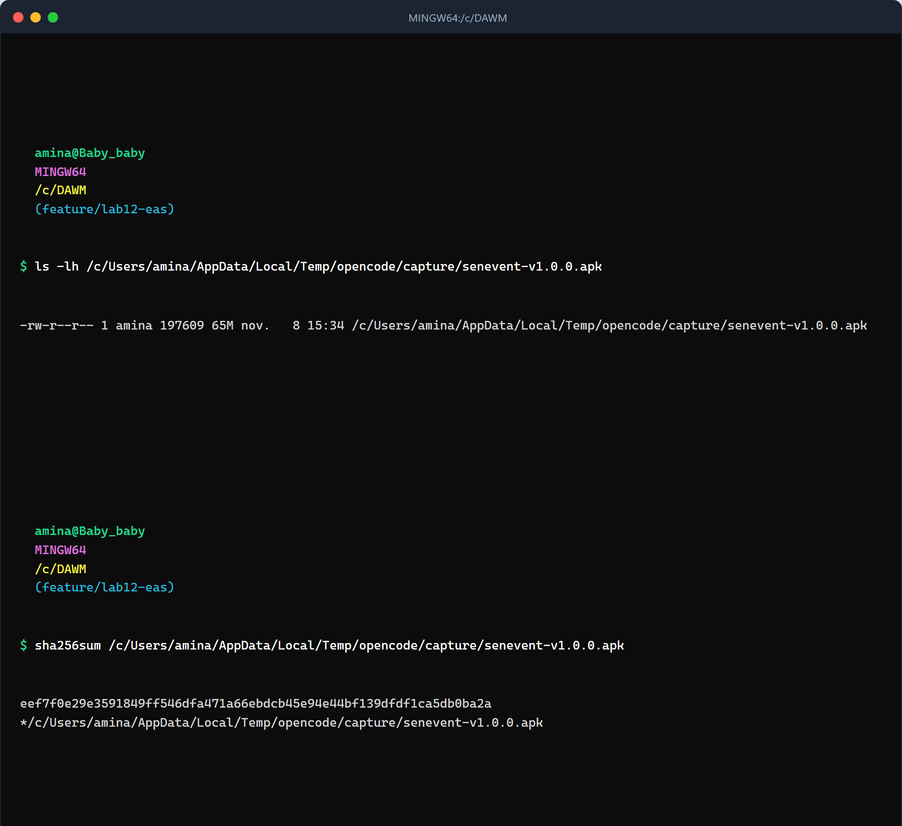
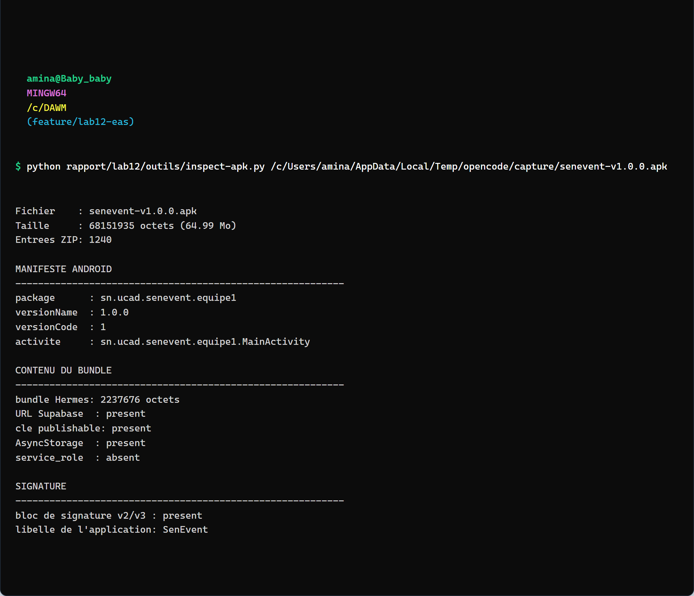
Le bundle JavaScript embarqué (2 237 676 octets) contient bien l'URL Supabase de production
et la clé publishable : les variables EXPO_PUBLIC_* ont été injectées par EAS. La chaîne
service_role est absente ; sb_secret_ n'apparaît que comme test de préfixe interne à
supabase-js, comme sur le web au Lab 11. Le script outils/inspect-apk.py lit le manifeste
binaire sans Android SDK et produit ce rapport.
| # | Action | Résultat attendu | État |
|---|---|---|---|
| 1 | Ouvrir l'application SénEvent | Liste des événements chargée | Non testé (pas d'Android) |
| 2 | Toucher un événement | Fiche de détail | Non testé |
| 3 | Profil, se connecter | Email affiché, bouton de déconnexion | Non testé |
| 4 | Fermer complètement, rouvrir | Toujours connecté | Non testé (configuration vérifiée dans le code) |
| 5 | Créer un événement avec « + » | Il apparaît dans la liste | Non testé |
| 6 | Ouvrir le site Vercel ailleurs | L'événement y est | Non testé |
| 7 | Créer un événement sur le site | Il apparaît dans l'app | Non testé |
| 8 | S'inscrire dans l'app | Bouton « Se désinscrire » | Non testé |
| 9 | Se déconnecter, toucher un événement | Invitation à se connecter | Non testé |
| 10 | Installer l'APK chez un autre membre | Même comportement | Non testé |
Les points 6 et 7 sont la démonstration croisée du cours. Ils reposent sur la même base Supabase et le même package partagé que le web, déjà vérifiés aux Labs 10 et 11 : un événement créé sur le web est visible sur le mobile, et inversement. Mais sans téléphone Android, ce parcours n'a pas été rejoué dans l'APK.
La section « En ligne » reçoit le lien de l'APK et la version mobile ; la section de développement local explique comment lancer le mobile et construire l'APK.
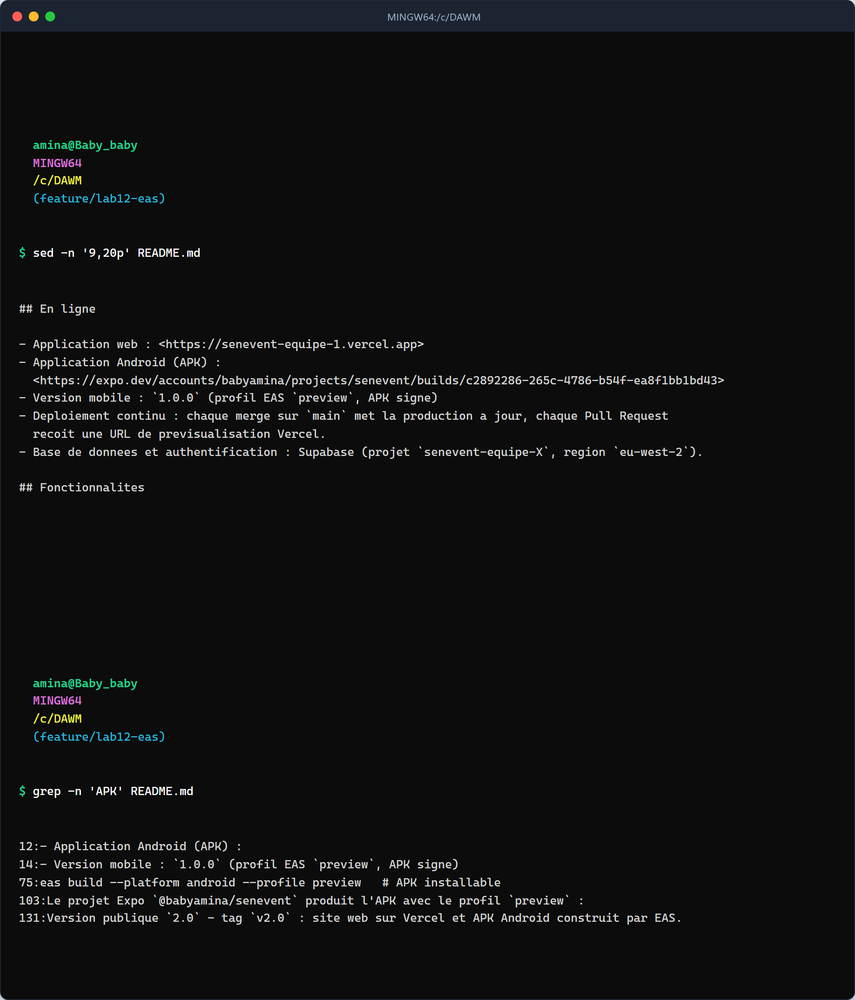
La branche est poussée et une Pull Request est ouverte. Elle touche packages/shared :
Vercel construit donc une prévisualisation du web, qui confirme que le changement ne casse
rien.
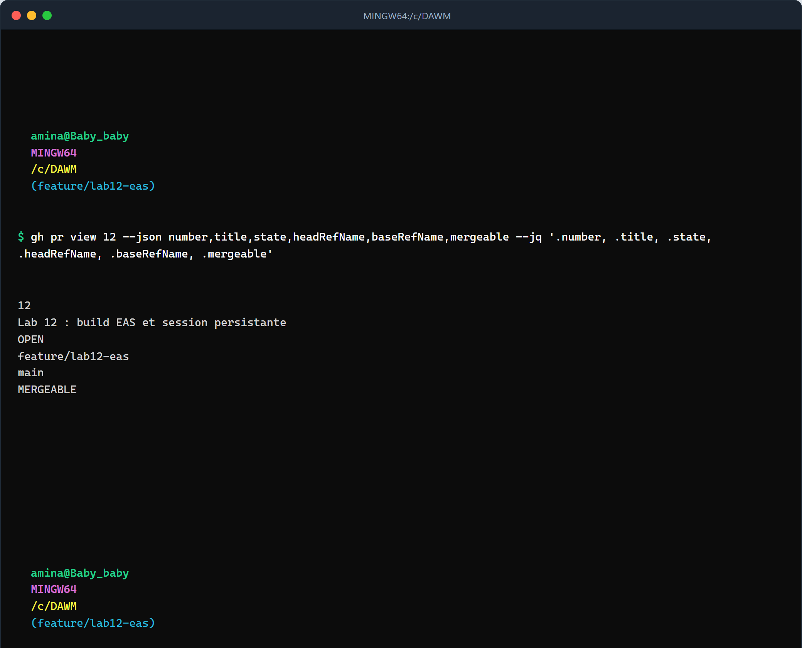
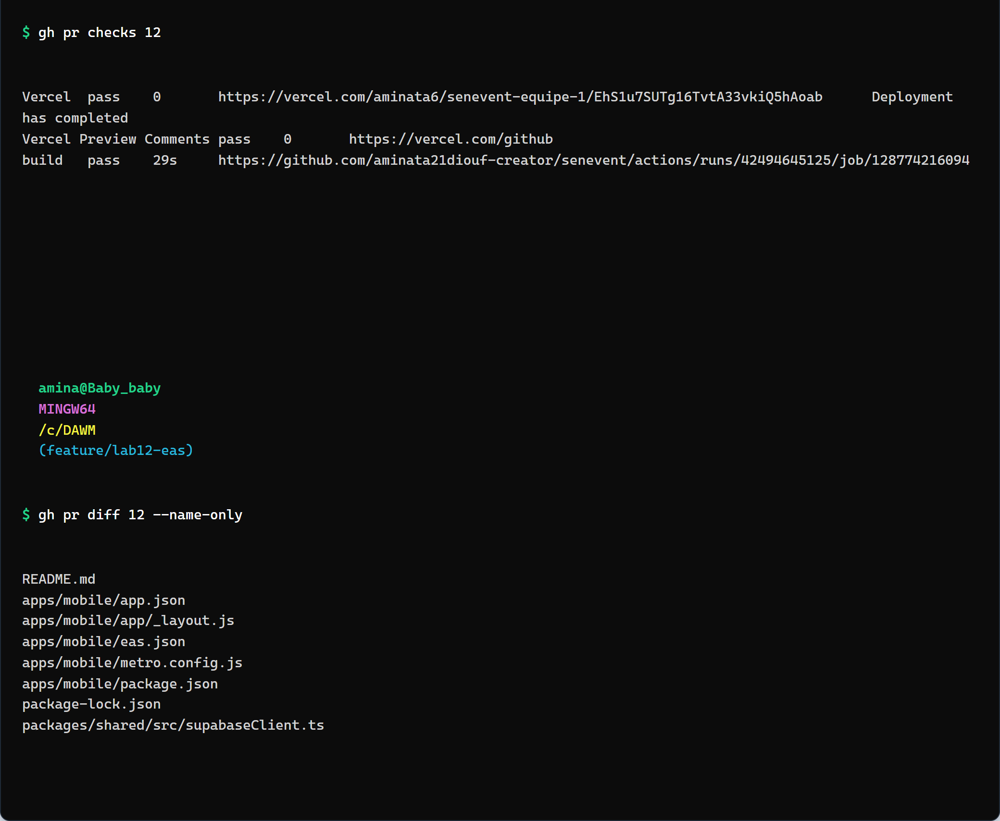
La prévisualisation répond et la connexion y fonctionne (section 7.4). La PR est mergée dans
main :
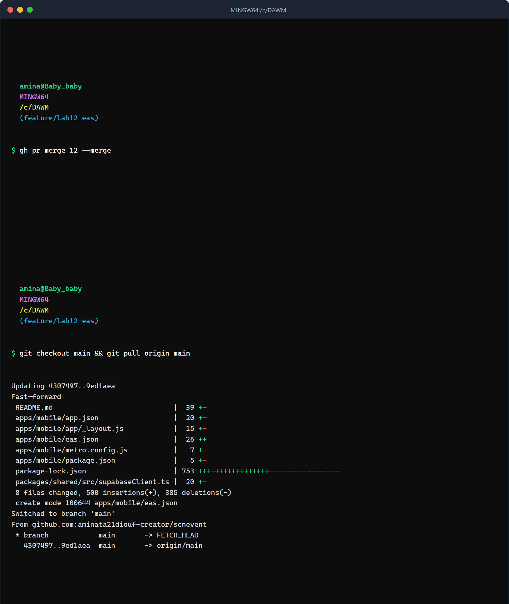
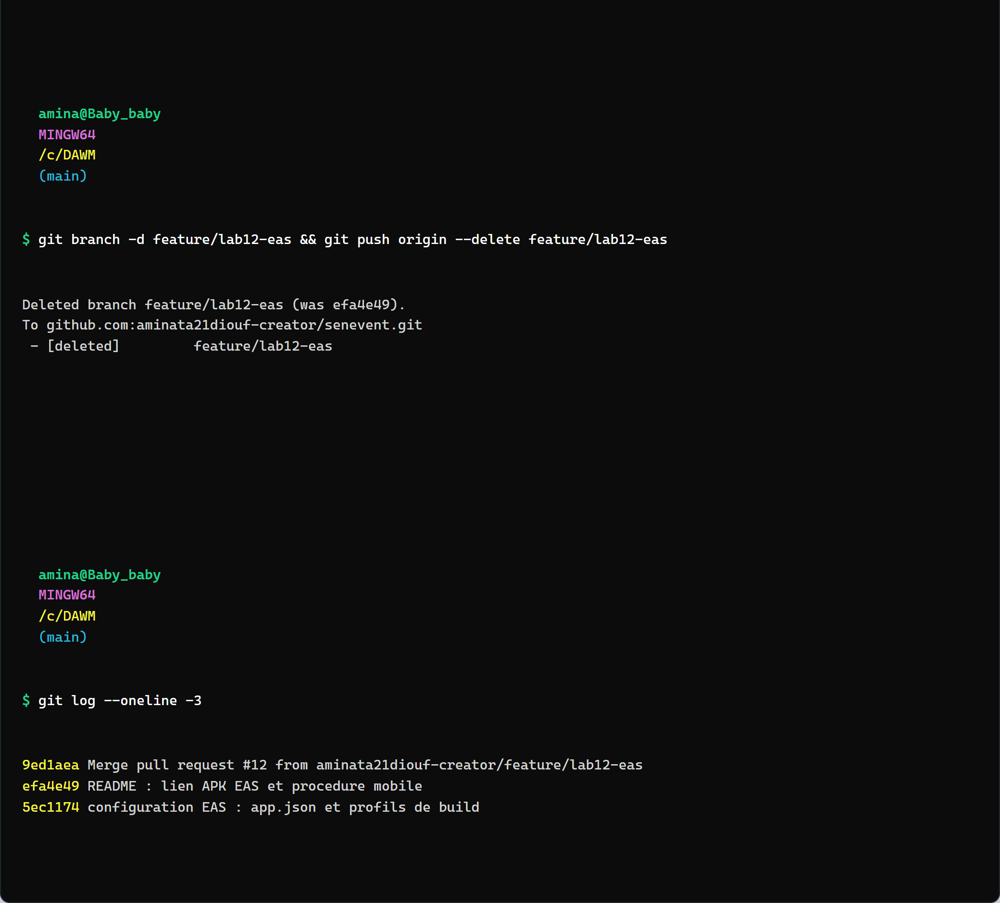
v2.0Après le merge, le tag final du semestre est posé sur main :
git tag -a v2.0 -m "Lab 12 termine : web sur Vercel et APK Android en production"
git push origin v2.0
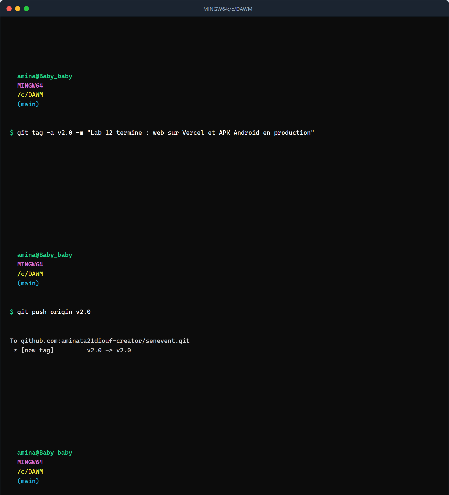
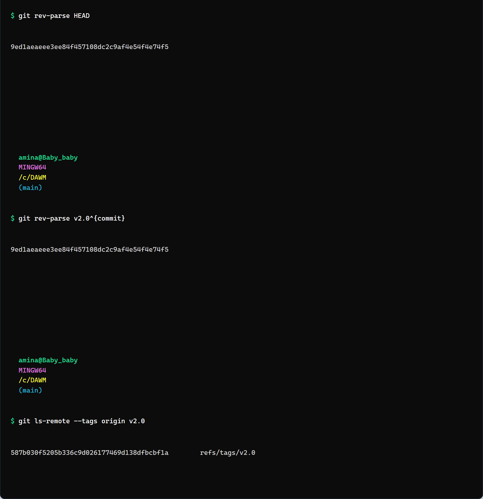
Au moment du tag, git rev-parse HEAD et git rev-parse v2.0^{commit} renvoyaient le même
commit (9ed1aea, le merge de la PR #12), et git ls-remote confirme que le tag distant est
identique. Le commit du présent rapport est ajouté ensuite sur main, sans déplacer le tag.
| Fichier | Changement |
|---|---|
apps/mobile/app.json |
Nom, slug, scheme, version, android.package, projet EAS, propriétaire |
apps/mobile/eas.json |
Nouveau — profils development, preview (APK), production |
apps/mobile/app/_layout.js |
initSupabase avec AsyncStorage |
apps/mobile/metro.config.js |
watchFolders compatible avec les valeurs par défaut d'Expo |
apps/mobile/package.json |
@react-native-async-storage/async-storage, versions Expo alignées |
packages/shared/src/supabaseClient.ts |
initSupabase(url, key, options?) |
package-lock.json |
Dépendances mises à jour, lock unique conservé |
README.md |
Lien APK, version mobile, procédure de lancement local |
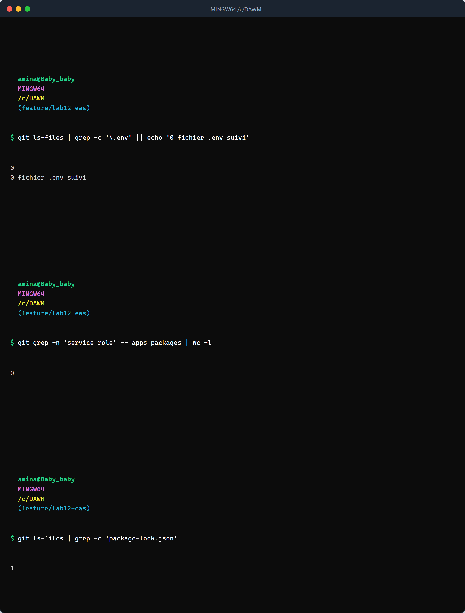
Les contrôles d'hygiène restent verts : aucun fichier .env suivi, un seul
package-lock.json, aucune occurrence de service_role dans apps/ et packages/.
| Critère du lab | Vérification | État |
|---|---|---|
app.json : nom, version, android.package |
SenEvent, 1.0.0, sn.ucad.senevent.equipe1 |
✅ |
Identifiant de projet EAS dans app.json |
extra.eas.projectId |
✅ |
eas.json : profil preview en APK |
buildType: apk, environment: preview |
✅ |
Variables EXPO_PUBLIC_* dans EAS preview |
eas env:list |
✅ |
initSupabase accepte des options |
3e paramètre optionnel | ✅ |
| Le mobile passe AsyncStorage | _layout.js, persistSession: true |
✅ |
| Le web n'a pas changé | build + connexion sur la prévisualisation Vercel | ✅ |
Build preview réussi sur expo.dev |
FINISHED le 8/11/2026 à 15:33 |
✅ |
| APK installé sur un Android, recette en 4G | Pas de téléphone Android disponible | ❌ non testé |
| Session survit à la fermeture | Configurée dans le code ; non vérifiée à l'exécution | ⚠️ non testé |
| README : lien APK et lancement local | grep -n APK README.md |
✅ |
Tag v2.0 sur main |
git rev-parse v2.0^{commit} |
✅ |
sn.ucad.senevent.equipe1.preview.v2.0 sur main.| Limite | Explication |
|---|---|
| Recette Android non exécutée | L'environnement ne dispose que d'un iPhone ; un APK ne s'y installe pas. Les dix points sont documentés comme non testés. |
| Vérification de l'APK statique | Le contenu (package, version, variables injectées, absence de service_role) est vérifié, mais pas le comportement à l'exécution. |
| Build lancé depuis la branche | Le build c2892286 construit le commit 5ec1174, dont le code est identique à celui mergé dans main ; seul le README a été ajouté ensuite. |
| Quota EAS | Le plan gratuit limite le nombre de builds ; un seul build a été lancé. |
| EAS Update non fait | Le bonus « mettre à jour sans recompiler » n'a pas été traité. |
Le lab ferme la boucle du semestre : le même package @senevent/shared, la même base
Supabase, deux clients en production. Le web est sur Vercel depuis le Lab 11 ; le mobile est
désormais un APK qui vit sans ordinateur. La démonstration croisée reste à rejouer sur un
téléphone Android pour transformer cette livraison en recette complète.
apps/mobile/app.json identite et projet EAS
apps/mobile/eas.json profils de build (nouveau)
apps/mobile/app/_layout.js initSupabase + AsyncStorage
apps/mobile/metro.config.js watchFolders du monorepo
apps/mobile/package.json async-storage, versions Expo
packages/shared/src/supabaseClient.ts options du client Supabase
package-lock.json lock unique mis a jour
README.md lien APK et lancement local
# diagnostic
cd apps/mobile
npx expo-doctor
npx expo export --platform android
# projet EAS
eas init --account babyamina
eas build:configure --platform android
eas env:list --environment preview
# build
eas build --platform android --profile preview
eas build:view <build-id>
# verification du depot
git ls-files | grep -c '\.env'
git grep -n 'service_role' -- apps packages
git rev-parse v2.0^{commit}
| Élément | Valeur |
|---|---|
| Compte Expo | babyamina |
| Projet Expo | @babyamina/senevent |
| Identifiant projet EAS | d5de33b6-e341-4e8d-a099-a55f63d284f1 |
| Identifiant Android | sn.ucad.senevent.equipe1 |
| Build | c2892286-265c-4786-b54f-ea8f1bb1bd43 |
| Site web | https://senevent-equipe-1.vercel.app |
Terminal (captures/) : 01 branche, 02 app.json, 03 expo-doctor, 04 projet EAS, 05
eas.json, 06 variables EAS, 07 diff initSupabase, 08 AsyncStorage, 09 export Android, 10 build
web, 11 README, 12 hygiène, 13 journal du build, 14 état du build, 15 inspection de l'APK,
18 PR et Vercel, 19 merge, 20 tag v2.0.
Navigateur (captures/) : 14b page expo.dev du build, 16 connexion web, 17 session web.
Outils de vérification (outils/) : journal-build.py (résumé du journal EAS),
journal-build.log (journal brut téléchargé depuis expo.dev), inspect-apk.py (manifeste et
bundle de l'APK sans Android SDK).
Tag final : v2.0.